2D1は、独立したデザインスタジオとして、ブランド、デジタルプロダクト、アイデアを横断して活動しています。初期の構想から、見た目や使い心地、世の中でのあり方まで、一緒にかたちにしていきます。
クライアントワークと並行して、気の合う人たちと自分たちのものをつくり、ものを選び集めています。私たちはそれらをFamiliar Characters— 日々の暮らしを静かに重ね、やがて私たちの日常の一部になっていく仲間たちです。
スタジオ
明確なアイデアに、
個性を。
私たちの中心にあるのは、デザインスタジオとしての仕事です。
小さなチームや事業とともに、アイデアを明確にし、かたちにします。目指すのは、明快で、直感的で、あなたらしいもの。
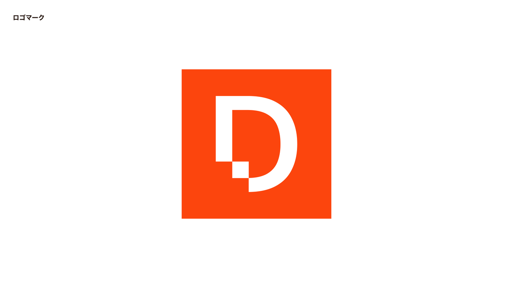
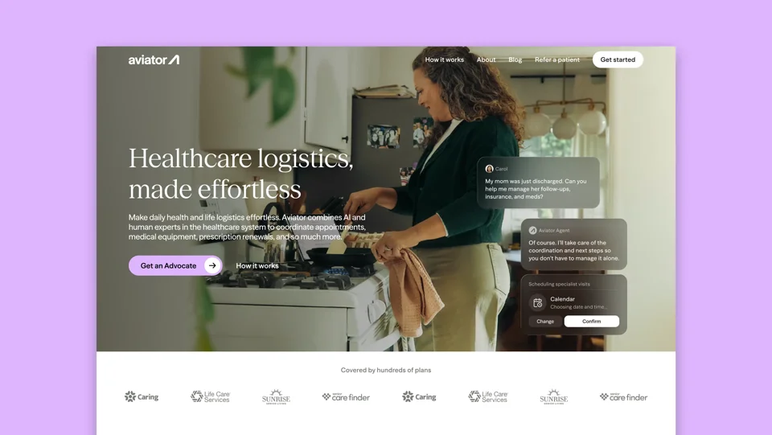
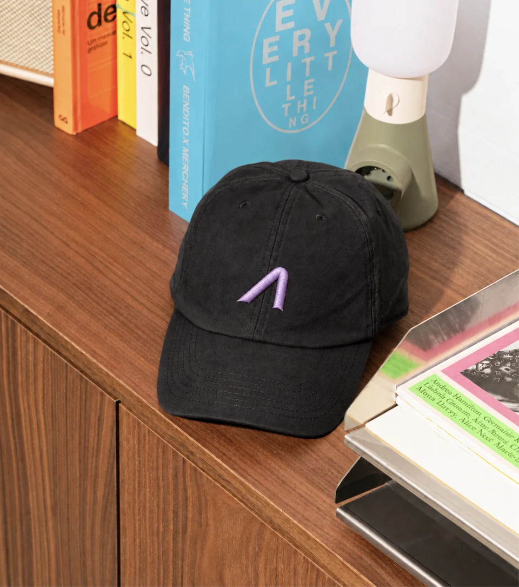
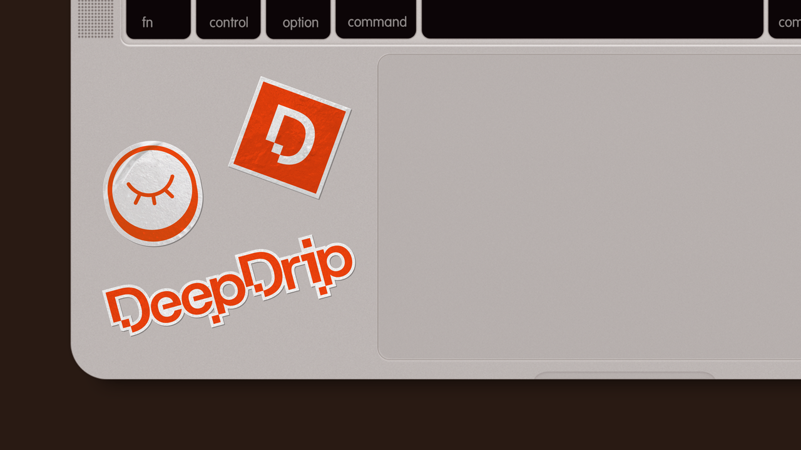
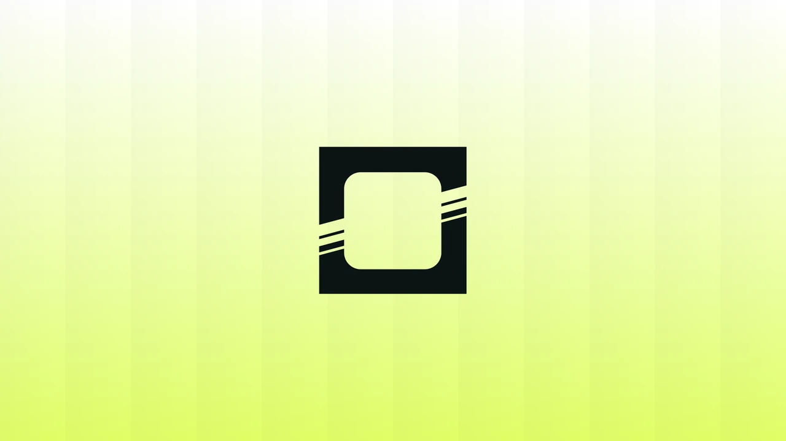
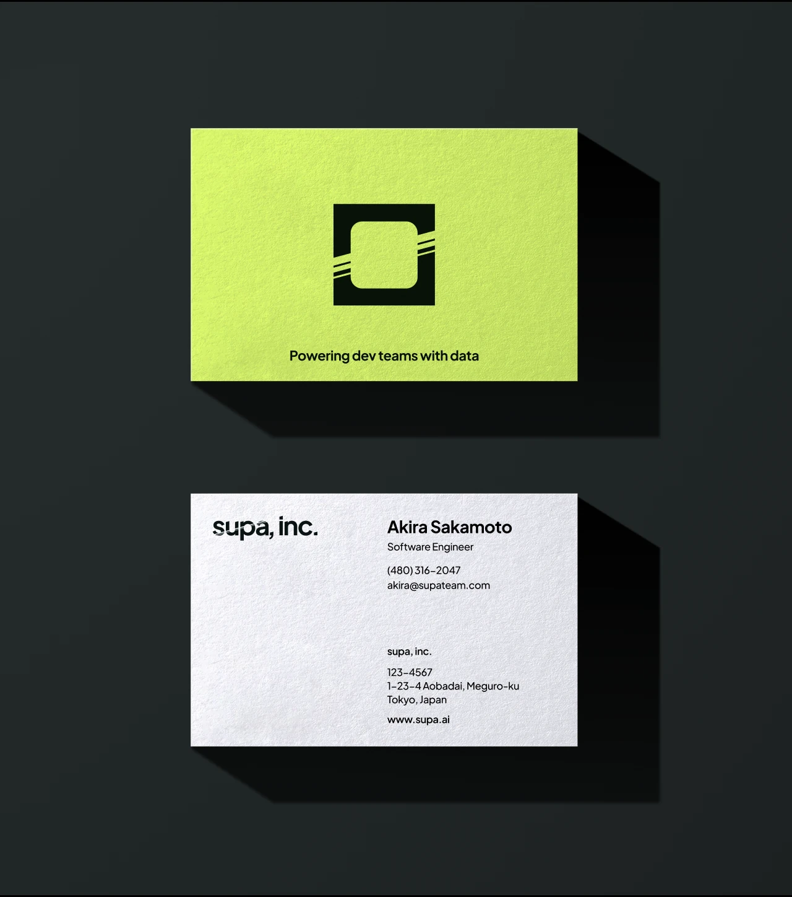
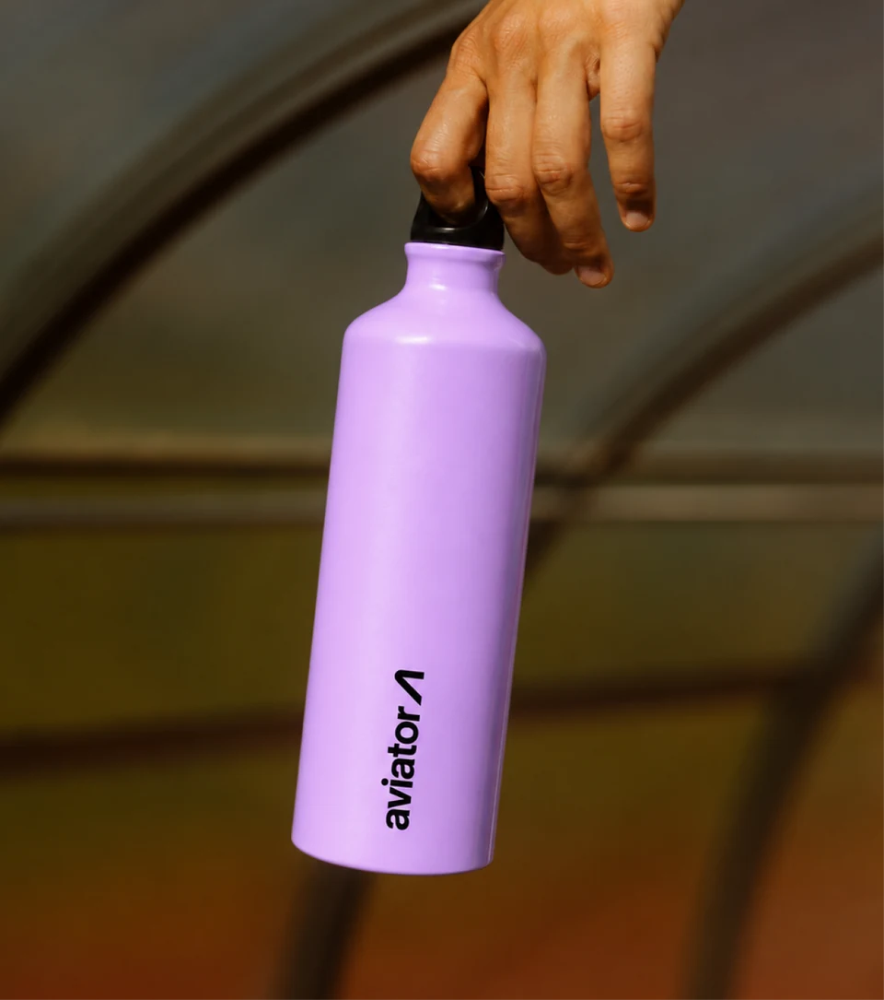
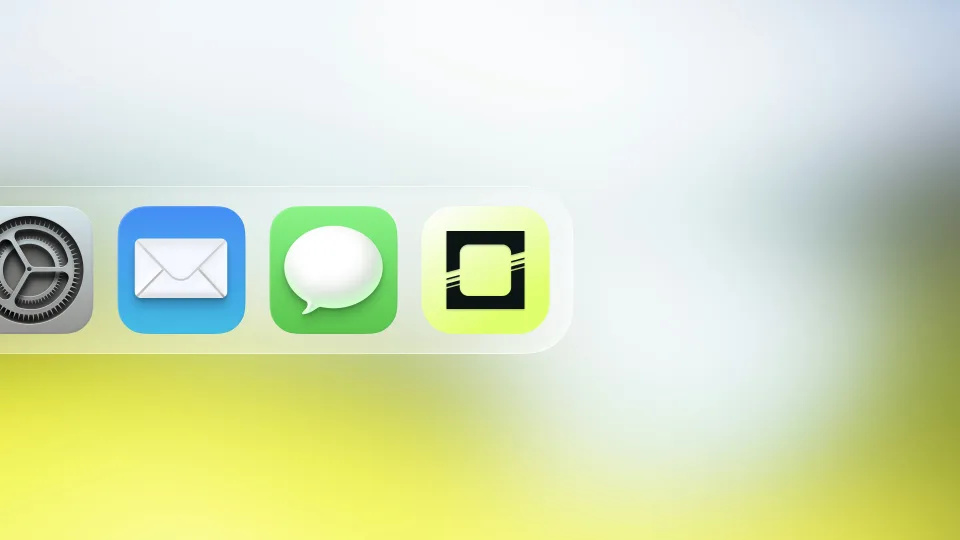
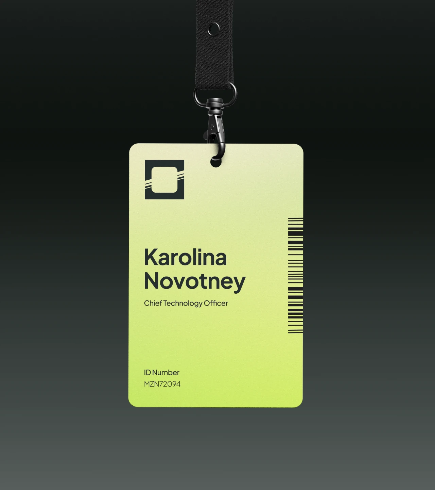
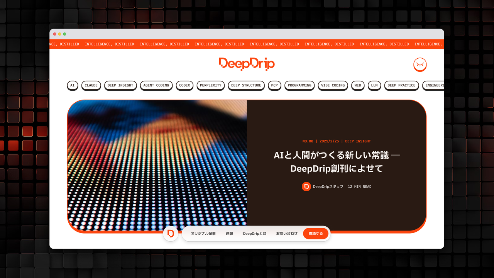
サービス
- デザインコンサルティング
- アドバイザリー、ディレクション
- デジタルプロダクトデザイン
- ウェブサイト、UX/UI、デザインシステム
- ブランドデザイン
- アートディレクション、グラフィックデザイン、ビジュアルアイデンティティ
ショップ
身近なものたちの家。
つくる喜びは、私たちの活動の中心にあります。自分たちのためにつくるものも、クライアントのための仕事と同じところから始まります。明確なアイデアと、そのものらしさを生むディテールから。
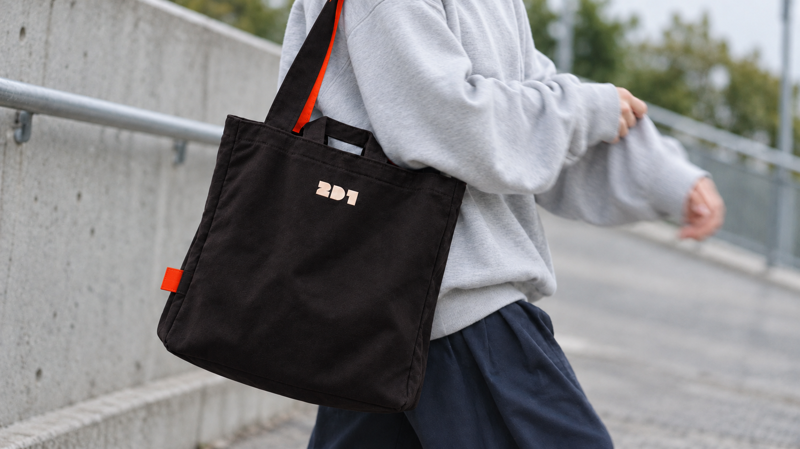
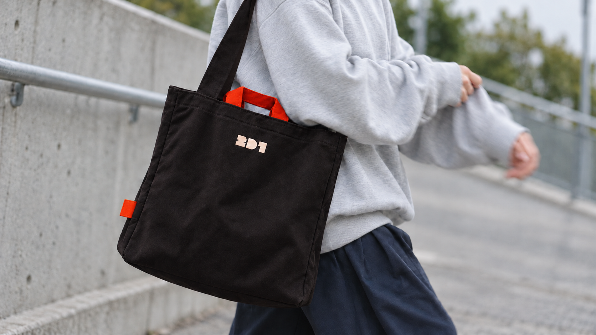
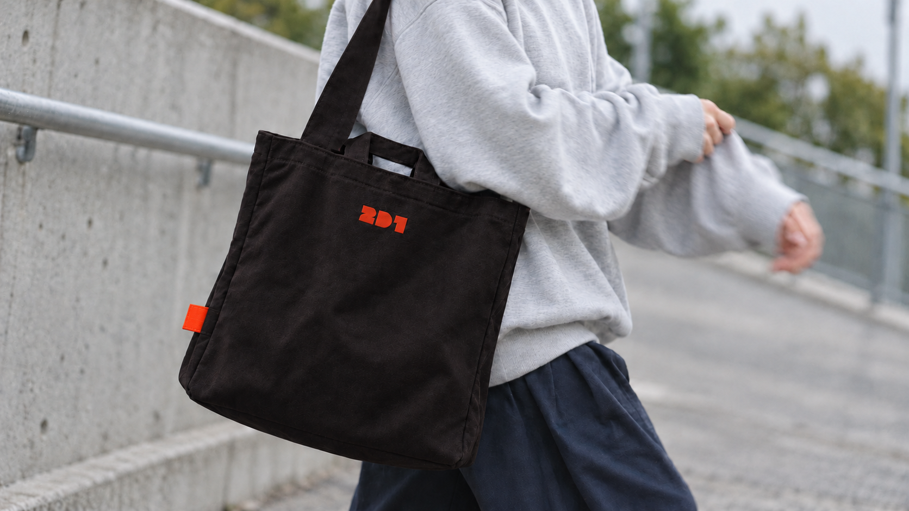
仕様を見る
仕様
- 素材
- アルマダ8号帆布（綿100%）
アルマダは、日本で織られた仙田の綿100%の8号帆布。ざっくりとした織りと硬糊仕上げのハリがバッグの形を支え、使い込むほどに柔らかくなります。形を保ちながら、日々を重ねて表情を増していくバッグにしたくて、この生地を選びました。
どこでつくられているかも、同じくらい大切でした。アメリカの歴史ある生地を日本でよみがえらせるAlbertonも検討しました。私たちが伝えたい、日本の帆布で日々の道具をつくるという話には、アルマダのほうがしっくりきました。日本でものをつくることは、2D1にとって大切な軸。その選択は、生地から始まっています。
- 生産国
- 日本製
- サイズ
- 約 幅40 × 高さ36 × マチ10cm（ストラップを除く）
- ストラップ
- 内側が赤いダークカラーのショルダーストラップと、同色の短い持ち手単色のダークカラーのショルダーストラップと、赤い短い持ち手単色のダークカラーのショルダーストラップと、同色の短い持ち手
- 織りタグ
- 左側の縫い目から突き出した、赤い正方形の織りタグ
- ポケット
- ボトルを支えるバンドと、小物を収納する底部の幅広ポケット
- 開口部
- 開口部の折り返しに隠したマグネット留め
- ロゴ
- 2D1ロゴの刺繍
AI生成のコンセプト画像。細部は製品化までに変更される場合があります。
2D Toteは、私たちが初めてつくる日用品。どこへでも連れていける帆布のトートです。シンプルなかたち、便利な内ポケット、そして自分のものだとわかる赤のアクセント。
2D Toteはまだ開発中です。活動の最新情報は、ぜひフォローしてご覧ください。